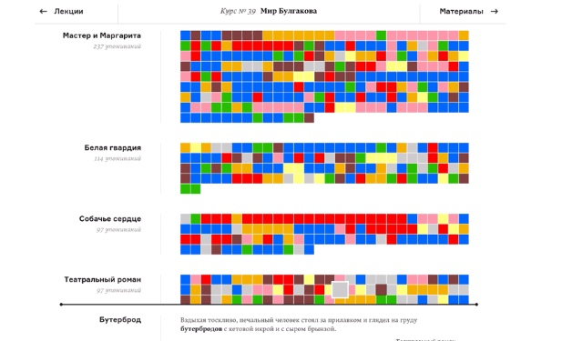
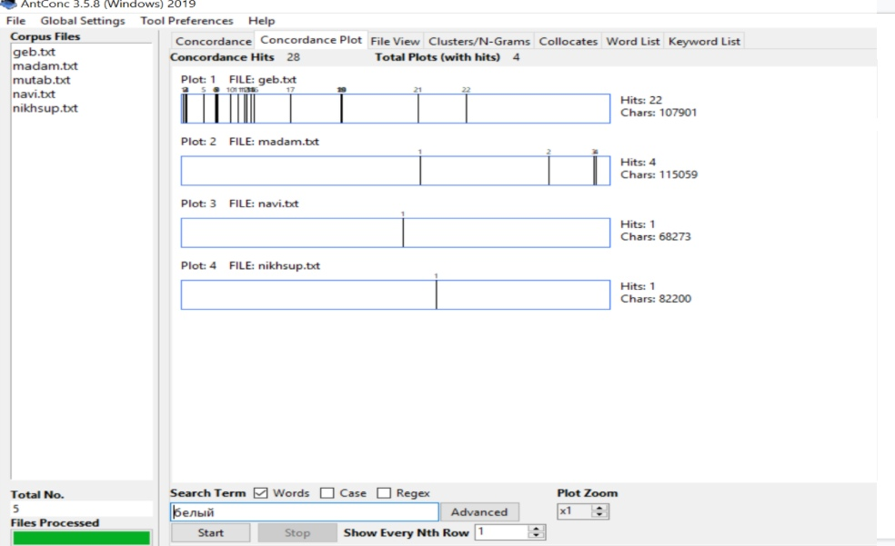
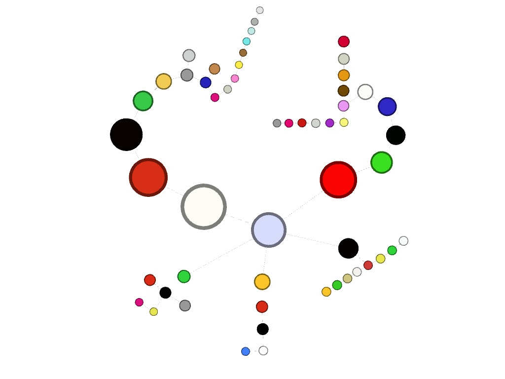
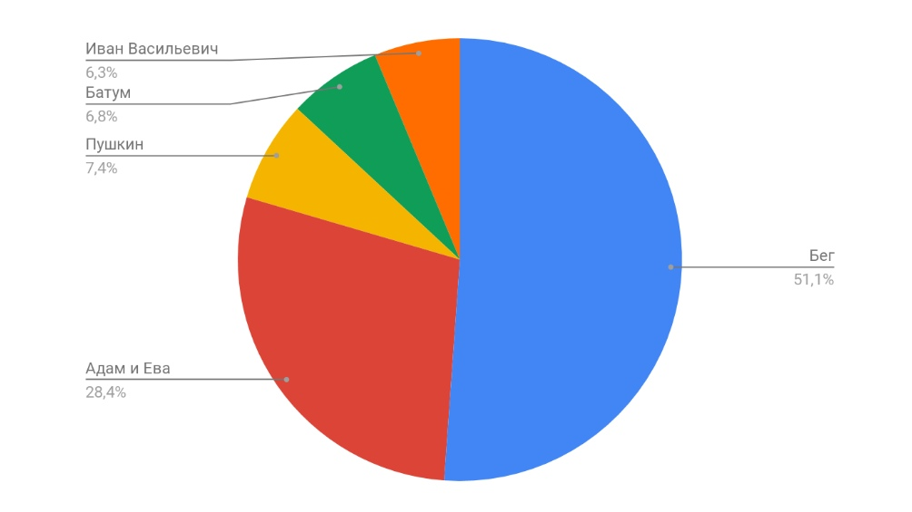
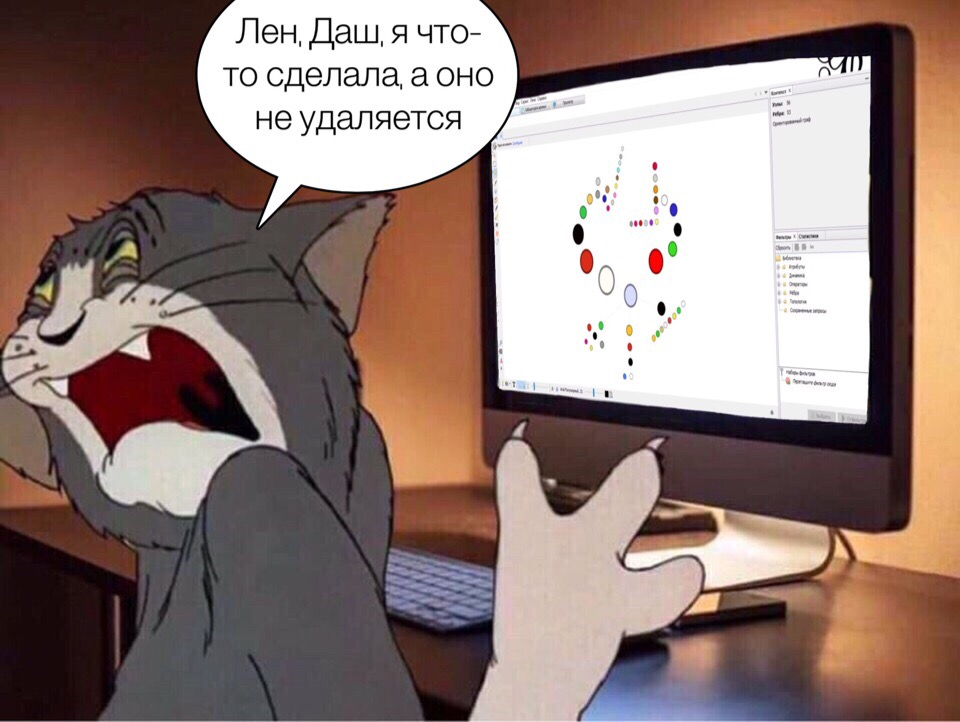

Рассмотреть пьесы М. А. Булгакова и постараться выявить некоторые законномерности в цветовой поэтике. Были использованы пять пьес:
"Бег", "Адам и Ева", "Батум", "Пушкин" и "Иван Васильевич"

Сначала мы сделали выборку текстов, затем лемматизировали их.
Следующим шагом стало примение Antconc, с помощью которого нам удалось выявить все цветовые маркеры в пьесах.
В конце мы воспользовались Gephi, чтобы представить визуализацию проделанной работы.
На Arzamas есть исследование, посвященное анализу вкуса и цвета в прозе Булгакова. Мы же решили проанализировать пьесы
Вот как выглядит страничка в AntConc:.
После определения всех цветов в корпусе, открываем Gephi:
На схеме отлично видно закономерности, которые прослеживаются в цветовой поэтике Булгакова. Чем больше объём текста, тем больше в нём цветовых маркеров.
Кроме того, обращаем внимание на то, что чаще употребляются основные цвета, а оттенки – гораздо реже.
Частое употребление маркеров "красный" и "белый" связано с контекстом эпохи, а именно с Гражданской войной.
Данная диаграмма отражает, выведенную нами зависимость числа маркеров от объёма текста. В пьесе "Бег" 90 употреблений цветов, а "Иване Васильевиче" всего лишь 11.
В пьесах гораздо меньше цветовых маркеров, нежели в прозе, так как пьесы содержат меньше описательного элемента. Тем не менее, в результате исследования были выявлены не только цвета основной палитры, но и их оттенки. Объем пьес закономерно влияет на количество цветовых маркеров в них.
А в конце наш мем:
